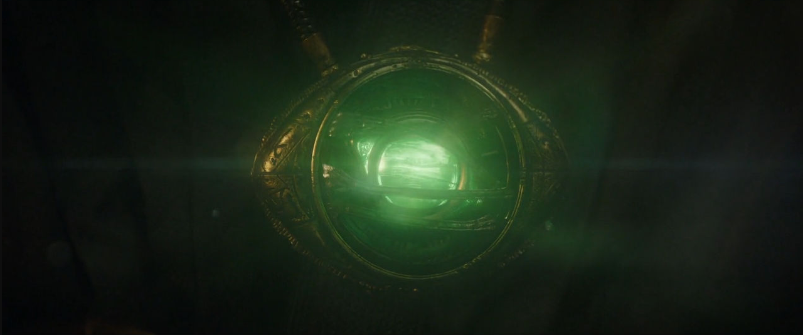
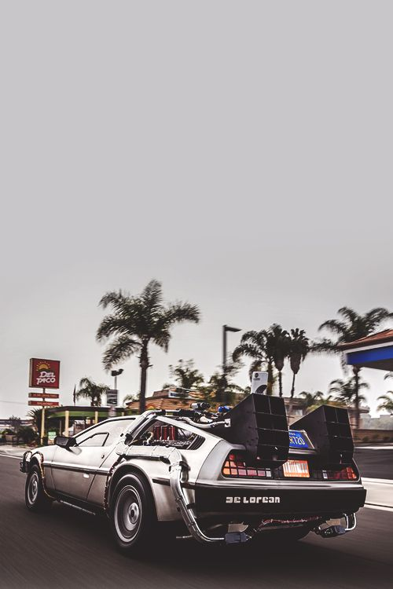

Entenda os conceitos de Física e Filosofia que acompanham o tempo.
O tempo é um conceito complexo que reúne diversos elementos das mais diversas areas.
Por Tullio Silva. Atualizado em 20 ago 2022, 13H41

Teoria da relatividade em geral
“A diferença entre passado, presente e futuro é somente uma persistente ilusão”. Essa frase do físico alemão Albert Einstein que dá início ao primeiro episódio da série já dá uma pista do que encontraremos pelo caminho.
A dilatação do tempo e a contração do espaço fazem parte da Teoria da Relatividade Restrita de Einstein, publicada em 1905. Ela recebe esse nome porque é restrita a referenciais inerciais (em repouso ou MRU – Movimento Retilíneo Uniforme).
Já a Teoria da Relatividade Geral, de 1915, entende e generaliza os conceitos da Relatividade Restrita aos referenciais acelerados, relacionando-os com a gravidade. É aí que aparecem brechas para as t...
para as teorias ou especulações sobre buracos de minhoca e dobras espaciais, conceitos muito trabalhados na série.
Ponte de Einstein-Rosen

Conhecido por Ponte de Einstein-Rosen, é uma dobra no espaço-tempo, que forma um túnel que conecta dois lugares e tempos diferentes, em uma espécie de atalho. A hipótese surgiu após os estudos dos físicos Albert Einstein e Nathan Rosen, em 1935.
Eterno retorno
Outro conceito explorado é o “eterno retorno”, de Friedrich Nietzsche.
Segundo o filósofo alemão, o tempo é uma estrutura circular. Dessa forma, os eventos que formam a nossa existência se repetem infinitas vezes em eternos ciclos.
Essa teoria também é lembrada na série pelo uroboros, conceito representado por um símbolo de uma cobra engolindo o próprio rabo, encontrado na caverna.
Seguindo esse raciocínio, é inevitável esbarrar na crítica de Nietzsche ao livre-arbítrio. Afinal, nessa teoria, todos os fatos já estão atrelados em uma causalidade que impede mudanças. Mesmo uma suposta viagem ao passado já estaria prevista e desencadearia os mesmos acontecimentos encarados posteriormente.
Paradoxo de Bootstrap
De todos os conceitos mencionados, o Paradoxo de Bootstrap é o mais explorado por Dark. Esse nome é uma referência à expressão pulling yourself up by your bootstraps, que pode ser traduzida por “puxar-se a si mesmo pela alças de suas botas”. A ideia é a de que algo possa dar origem a si mesmo, desencadeando um ciclo sem fim. Em primeiro lugar, é preciso considerar a possibilidade de uma viagem ao passado. A partir disso, algo passa a existir sem nunca ter sido criado.
Um exemplo de paradoxo é o livro Uma Jornada Através do Tempo, de H.G. Tannhaus. O jovem Tannhaus recebe de Claudia Tiedemann uma cópia do seu livro pronto sem tê-lo escrito ainda. Ele decide então publicá-lo e, anos depois, uma outra versão de Claudia recebe uma cópia da obra e volta ao passado para entregá-lo ao relojoeiro mais novo. Nesse ciclo, a existência do livro é um fato, mas não se sabe a origem dele. Ele só consegue publicar a obra porque a recebeu de Claudia, que por sua vez, só tem acesso ao livro porque ele o publicou.
Esse paradoxo elimina a ideia da linearidade do tempo. Os eventos deixam de ser apenas consequências de fatos anteriores, mas se tornam as causas. Em vez de apenas o futuro sofrer a influência do passado, ele passa a influenciá-lo também.